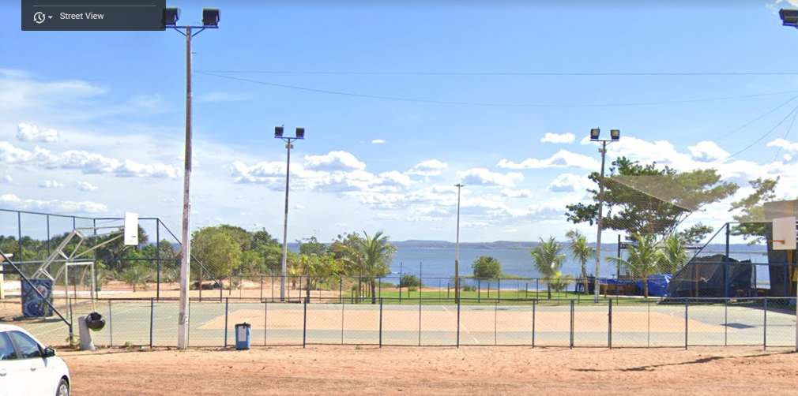

Basquete em Palmas TO
Atualmente em Palmas-Tocantins existem apenas duas quadras publicas nas quais são possives praticar o esporte, isso devido principalmente a vandalismo e decadência do patrimônio público.
E essas praças estão localizadas na praça central da qudra 108 Sul apelidada pelos que frequentam de 13 é a mais popular entre os jovens praticantes do esporte na cidade de palmas, e a outra se encontra na praia da graciosa proximo ao bar Dona Maria Beach.
Arremesso campeão
Alem disso na "13" exste um projeto social (Arremesso campeão) que visa ensinar as crianças e jovens esse maravilhoso esporte que é o basquete, com os principais objeticos de evitar que os jovens fiquem na rua em seu tempo livre ocupando o tempo com a pratica do esporte e dar uma opção a mais para o jovem que pode um dia se tornar jogador proficional como ja aconteceu la no projeto, desde o inicio do projeto 4 jovens ja conseguiram vagas em grandes times.
localizção a baixo:
Quadra de basquete "13"
quadra na praia da graciosa:
 Quadra de basquete Praia da Graciosa
de uma olhada também na pagina ofial do basquete 13 no instagram